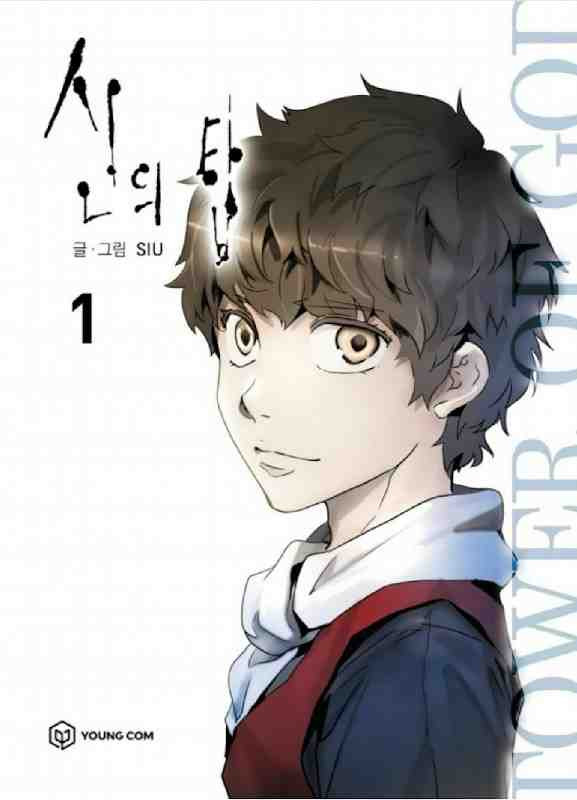
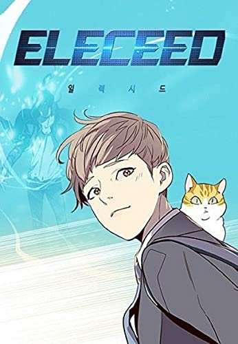
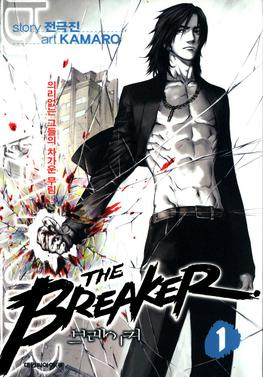
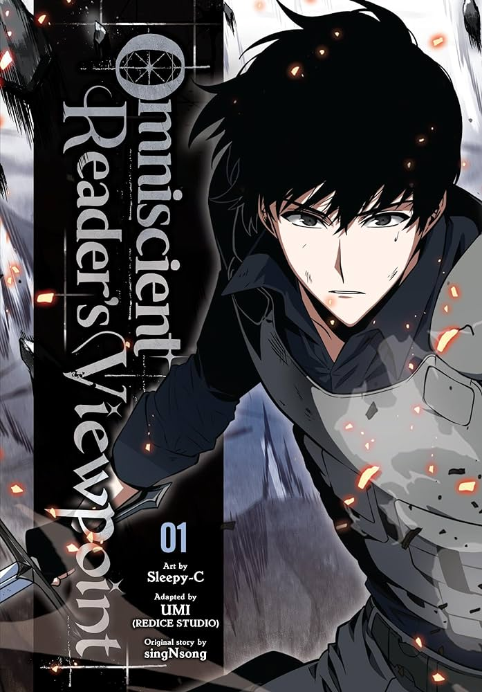
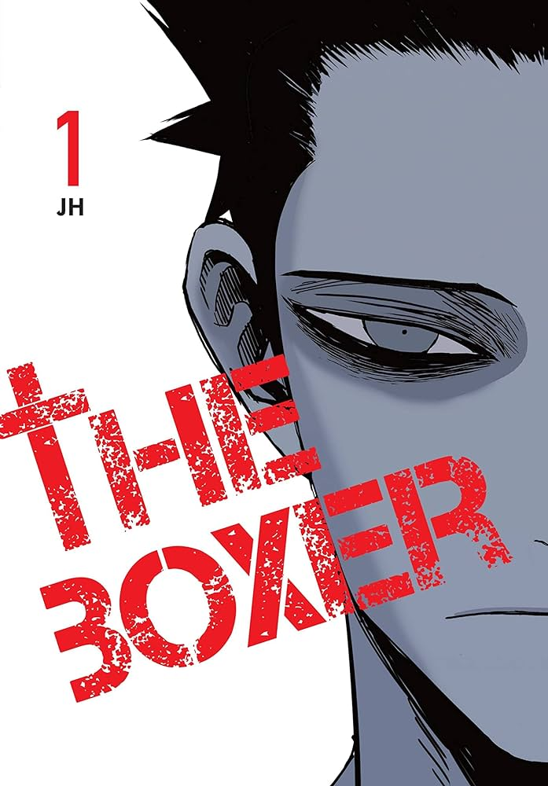
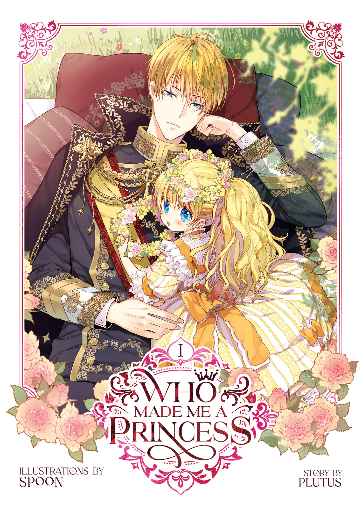
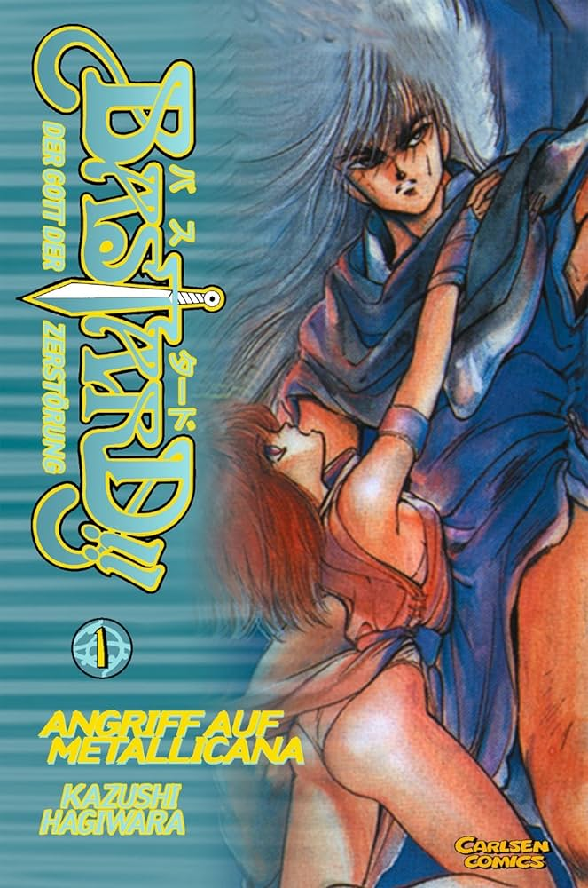
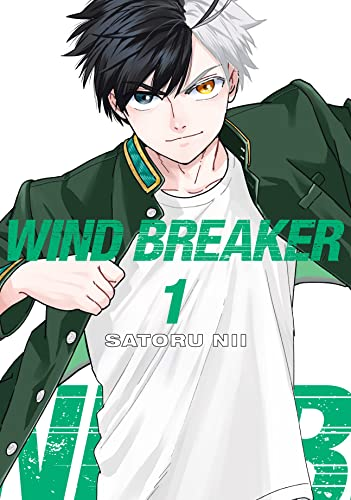
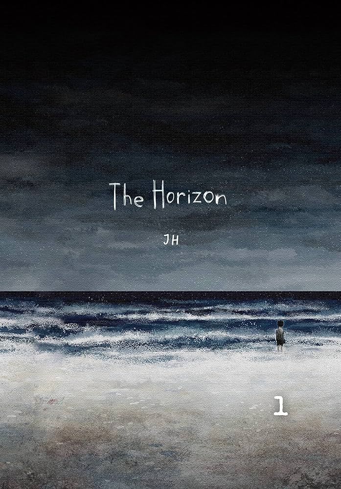

The top 10 Manhwa
These are the top 10 Manhwa as of 2023.

Author:
Lee Jong-hui (SIU)Genre:
Action, Adventure, Drama, Fantasy, MysteryRelease day:
July 5, 2010Anime Adaptation:
YesDescription:
There is a boy whose name is Bam who has only known a cavern, dirty clothes, and an unapproachable light his entire life. So when a girl whose name is Rachel approached him in the morning, his whole life changed. He learned a lot of things about the outside world after becoming her friend. But when Rachel told him that she must leave him to climb the tower, his world broke, and he decided to follow her no matter what happened. He set his eye on the building, and a miracle occurred.

Author:
Kim, Hye-Jin (Art), Son, Jae-Ho (Story)Genre:
Action, FantasyRelease day:
October 2, 2018Anime Adaptation:
NoDescription:
Jiwoo is a kind-hearted young man who harnesses the lightning quick reflexes of a cat to secretly make the world a better place - one saved little child or foster pet at a time. Kayden is a secret agent on the run, who finds himself stuck in the body of a decidedly fat old fluffy cat. Together, armed with Jiwoo's super powers and Kayden's uber-smarts, they're out to fight those forces who would let evil rule this world. That is, if they can stand each other long enough to get the job done.

Author:
Park, Jin-Hwan (Art), Jeon, Geuk-jin (Story)Genre:
Action, Comedy, DramaRelease day:
June 1, 2007Anime Adaptation:
NoDescription:
Yi "Shioon" Shi-Woon's everyday life at Nine Dragons High School—which consists of beatings from fellow student Ho Chang and his gang—is far from ideal. But one day, a mysterious man named Han Chun Woo spots one of these beatings and instead of offering support, brands Shioon a coward for refusing to fight back, adding insult to injury. To Shioon's surprise, he finds out that Chun Woo is the new substitute English teacher at his school. Tired of the daily abuse, Shioon decides to enroll at a martial arts academy to learn how to defend himself. On the way there, he stumbles upon Chun Woo in a predicament—cornered in an alley by a group of angry men! Provoked, Chun Woo suddenly dispatches them using martial arts techniques, which Shioon covertly records. Later, he uses this recording to blackmail Chun Woo into teaching him to defend himself. Reluctantly, Chun Woo agrees, and Shioon is soon thrust into the world of martial arts, known as Murim. However, Shioon is naive and unaware of his master's shady past and the unseen underbelly of society. How will Chun Woo manage to teach Shioon and help him survive in the world of Murim?

Author:
sing N song (Story), Sleepy-C (Art)Genre:
Action, Adventure, FantasyRelease day:
May 26, 2020Anime Adaptation:
NoDescription:
Kim Dokja does not consider himself the protagonist of his own life. Befitting the name his parents gave him, he is a solitary person whose sole hobby is reading web novels. For over a decade, he has lived vicariously through Yoo Joonghyuk, the main character of the web novel Three Ways to Survive the Apocalypse (TWSA). Through Joonghyuk, Dokja has experienced secondhand the trials of repeatedly regressing in time, in search of an end to life-threatening "scenarios" that force people to act out narratives for the amusement of god-like "Constellations". After reading 3,149 chapters—long after all other readers lost interest—Dokja finally resigns himself to the story ending. However, he receives an enigmatic message from the author, stating that the story will soon be monetized, before his surroundings suddenly go dark. He swiftly realizes that fiction has become reality and he is now living through TWSA. Although he is the singular omniscient reader of the events yet to come, his success in the scenarios is not guaranteed—but perhaps his advantage will empower him to step into the protagonist role that never suited him before.

Author:
Jeong, Ji-Hoon (Story & Art)Genre:
Drama, SportsRelease day:
December 4, 2019Anime Adaptation:
NoDescription:
Having suffered ruthless bullying for the better part of his life, 17-year-old Yu has become emotionally numb and dissociated from reality, no longer able to act like a normal human being. Although he possesses the exceptional talent to dodge punches, Yu prefers to let his perpetrators beat him down as he finds no meaning in his survival. Things begin to look up when Yu meets an old boxing trainer nicknamed "K." Having raised five champions, K's years of experience and an impressive gut feeling allow him to recognize Yu's near-superhuman fighting charisma immediately. K rushes to take Yu under his wing, despite the latter's apparent lack of interest. However, after being reminded of a bright memory from the past, Yu has a change of heart and accepts K's offer, hoping to experience the same light once again. Thus, Yu enters a world full of formidable adversaries—righteous and monstrous alike—and for the first time ever, he has no choice but to fight back.

Author:
Plutus (Story), Spoon (Art)Genre:
Comedy, Fantasy, RomanceRelease day:
December 20, 2017Anime Adaptation:
NoDescription:
In the novel The Lovely Princess, the secondary character Athanasia de Alger Obelia is the most pitiful of all. Her mother died in childbirth and her father, Emperor Claude, never gave his daughter even an inch of love. Forever yearning for even the slightest bit of parental love, she was ultimately framed for a crime and executed by the orders of her beloved father. When a woman from modern-day Korea falls asleep with some sleeping pills, she later awakens in the infant body of Athanasia. Knowing the unenviable fate that awaits her, she resolves to remain out of her tyrannical father's sight so that she may never incur his wrath. However, fate isn't so kind, and she meets him at only five years of age. With her original plan tossed out of the window, she now aims to endear herself so much to her father that he would never dream to hurt her. However, as many work toward their own ends, her plan is thrown into chaos—Athanasia's biological "sister" Jennette Margarita longs for a family, high-ranking nobility vie for power, and a shadow from Claude's past threatens to destroy everything he holds dear.

Author:
Kim, Carnby (Story), Hwang, Young-chan (Art)Genre:
Drama, Horror, Mystery, RomanceRelease day:
July 4, 2014Anime Adaptation:
NoDescription:
There is nowhere that Seon Jin can find solace. At school, he is ruthlessly bullied due to his unsettlingly quiet nature and weak appearance. However, this is not the source of Jin's insurmountable terror: the thing that he fears more than anything else is his own father. To most, Jin's father is a successful businessman, good samaritan, and doting parent. But that is merely a facade; in truth, he is a deranged serial killer—and Jin is his unwilling accomplice. For years, they have been carrying out this ruse with the police being none the wiser. However, when his father takes an interest in the pretty transfer student Yoon Kyun, Jin must make a decision—be the coward who sends her to the gallows like all the rest, or be the bastard of a son who defies his wicked parent.

Author:
Jo, Yongseok (Story & Art)Genre:
Action, Drama, SportsRelease day:
December 15, 2013Anime Adaptation:
NoDescription:
Burdened with expectations since childhood, second-year high schooler Jo "Jay" Ja Hyun feels obligated to aim for the top through his studies. Despite obtaining the title of student president at Taeyang High, he continues to study diligently, giving him little time to befriend others. However, possessing an exceptional talent for biking with a technique that astonishes other experienced bikers, there is more to him than meets the eye. One afternoon, while Jay is skidding his bike at high speed, he catches the interest of his classmate, Yoon Min Woo. Amazed by his unparalleled biking skill, Min Woo is quick to recruit him to his biking crew, but Jay coldly rejects the offer. With a determination to show Jay the fun of riding with others, Min Woo proposes a simple deal—to race against a member of his team, promising to leave him alone if he wins.

Author:
Jeong, Ji-Hoon (Story & Art)Genre:
Adventure, DramaRelease day:
March 30, 2016Anime Adaptation:
NoDescription:
In a world ravaged by war, a young boy walks down a lonely road in the aftermath of his mother's death. Along his journey, he witnesses military tanks, dead bodies, and his beloved city in ruins. With eyes clouded by anguish, he pushes himself to keep moving forward. One morning, he meets a girl in an abandoned bus where he spent the night. Moments after their encounter, the area turns into a battlefield, and the pair escapes into a long abandoned lane. The two strangers decide to walk together to the end of the road, thus beginning a companionship that will ignite new hope inside their shriveled hearts.

Author:
https://myanimelist.net/manga/121496/Solo_Leveling?q=solo%20&cat=mangaGenre:
Action, Adventure, FantasyRelease day:
March 4, 2018Anime Adaptation:
YesDescription:
Ten years ago, "the Gate" appeared and connected the real world with the realm of magic and monsters. To combat these vile beasts, ordinary people received superhuman powers and became known as "Hunters." Twenty-year-old Sung Jin-Woo is one such Hunter, but he is known as the "World's Weakest," owing to his pathetic power compared to even a measly E-Rank. Still, he hunts monsters tirelessly in low-rank Gates to pay for his mother's medical bills. However, this miserable lifestyle changes when Jin-Woo—believing himself to be the only one left to die in a mission gone terribly wrong—awakens in a hospital three days later to find a mysterious screen floating in front of him. This "Quest Log" demands that Jin-Woo completes an unrealistic and intense training program, or face an appropriate penalty. Initially reluctant to comply because of the quest's rigor, Jin-Woo soon finds that it may just transform him into one of the world's most fearsome Hunters.